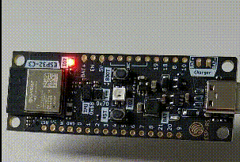

Introduction
The goal of this book is to provide a getting-started guide on using the Rust programming language with Espressif SoCs and modules using esp-hal.
The Two Approaches
First thing to decide when approaching Rust on Espressif SoCs is which approach you are going to use. We provide two very different ways to run your Rust code. (Actually there are three ways)
- Running in a hosted environment: use Rust including libstd on top of ESP-IDF - this matches the approach outlined here
- Running in a bare metal environment: use Rust without libstd and memory allocations are optionally supported - this matches the approach outlined here
This book will only cover the second approach. To learn more about the first approach please follow the instructions found in The Rust on ESP book
What is not covered?
In this book we will cover the basics using the most standard tools.
For many things there are alternative ways and tools but especially in the beginning that might be confusing.
Examples shown here usually apply to ESP32-C3 using the ESP32-C3-DevKit-RUST-1 board.
You can use any other ESP32, ESP32-C3, ESP32-S2 or ESP32-S3 development board but smaller code changes and configuration changes might be needed.
Also this book will only cover working locally. But there is support to use dev-containers and even developing in a hosted cloud environment like GitHub Codespaces and GitPod.
Additionally you can even try running code in a web browser without any actualy hardware using Wokwi
Important Terminology
This book assumes you are familiar with some special terms. If you don't already know what a PAC or HAL is there is a good introduction in the Discovery Book
Setting up a development environment
Installing Rust
Depending on which target you want to use installing Rust can be more or less involved.
Please follow the instructions outlined in The Rust on ESP Book
Installing Tools
There are only a few tools needed to get started.
- cargo-generate (
cargo install cargo-generate)- used to create a new project from a template, this is not strictly needed but creating a new project from scratch is quite some work
- espflash (
cargo install espflash)- used to flash your code via USB-serial
There are other tools which might be useful (e.g. espmonitor) but these two are the bare-minimum to follow the instructions in this book.
It's assumed you use Visual Studio Code with the Rust Analyzer Extension but that is not strictly needed and in theory you could use any text editor.
Creating a Project from the Template
The easiest way to start a new project is using the esp-template
To generate a new project:
cargo generate https://github.com/esp-rs/esp-template
Inspecting the generated Project
Using the esp32c3 target without dev-container support and without support for memory allocations this should generate a file structure like this:
│ .gitignore
│ Cargo.toml
│ LICENSE-APACHE
│ LICENSE-MIT
│ rust-toolchain.toml
│
├───.cargo
│ config.toml
│
├───.vscode
│ settings.json
│
└───src
main.rs
Before going further lets see what these files are for.
- .gitignore
- this tells
gitwhich folders and files to ignore
- this tells
- Cargo.toml
- the usual Cargo manifest declaring some meta-data and dependencies of the project
- LICENSE-APACHE, LICENSE_MIT
- those are the most common licenses used in the Rust ecosystem
- if you want to apply a different license you can delete these files and change the license in
Cargo.toml
- rust-toolchain.toml
- defines which Rust toolchain to use
- depending on your target this will use
nightlyoresp
- .cargo/config.toml
- the Cargo configuration
- this defines a few options to correctly build the project
- also contains
runner = "espflash --monitor"- this means you can just usecargo runto flash and monitor your code
- .vscode/settings.json
- settings for Visual Studio Code - if you are not using VSCode you can delete the whole folder
- src/main.rs
- the main source file of the newly created project
- we will examine it's content in the next section
main.rs
#![no_std]
#![no_main]
use esp32c3_hal::{clock::ClockControl, pac::Peripherals, prelude::*, timer::TimerGroup, Rtc};
use esp_backtrace as _;
#[riscv_rt::entry]
fn main() -> ! {
let peripherals = Peripherals::take().unwrap();
let system = peripherals.SYSTEM.split();
let clocks = ClockControl::boot_defaults(system.clock_control).freeze();
// Disable the RTC and TIMG watchdog timers
let mut rtc = Rtc::new(peripherals.RTC_CNTL);
let timer_group0 = TimerGroup::new(peripherals.TIMG0, &clocks);
let mut wdt0 = timer_group0.wdt;
let timer_group1 = TimerGroup::new(peripherals.TIMG1, &clocks);
let mut wdt1 = timer_group1.wdt;
rtc.swd.disable();
rtc.rwdt.disable();
wdt0.disable();
wdt1.disable();
loop {}
}
That is quite a lot of code. Lets see what it is good for.
#![no_std]- this tells the Rust compiler that this code doesn't use
libstd
- this tells the Rust compiler that this code doesn't use
#![no_main]- The
no_mainattribute says that this program won't use the standard main interface, which is tailored for command line applications that receive arguments. Instead of the standard main we'll use the entry attribute from theriscv-rtcrate to define a custom entry point. In this program we have named the entry point "main", but any other name could have been used. The entry point function must have the signaturefn() -> !; this type indicates that the function never returns – which means that the program never terminates.
- The
use esp32c3_hal:{...}- we need to bring in some types we are going to use
- these are from
esp-hal
use esp_backtrace as _;- since we are in a bare-metal environment we need a panic-handler that runs if a panic occurs in code
- there are a few different crates you can use (e.g
panic-halt) butesp-backtraceprovides an implementation that prints the address of a backtrace - together withespflash/espmonitorthese addresses can get decoded into source code locations
let peripherals = Peripherals::take().unwrap();- HAL drivers usually take ownership of peripherals accessed via the PAC
- here we take all the peripherals from the PAC to pass them to the HAL drivers later
let system = peripherals.SYSTEM.split();- sometimes a peripheral (here the System peripheral) are coarse grained and don't exactly fit the HAL drivers - so here we split the System peripheral into smaller pieces which get passed to the drivers
let clocks = ClockControl::boot_defaults(system.clock_control).freeze();- here we configure the system clocks - in this case we are fine with the defaults
- we freeze the clocks which means we cannot change them later
- some drivers need a reference to the clocks to know how to calculate rates and durations
- the next block of code instanciates some peripherals (namely Rtc and the two timer groups) to disable the watchdog which is armed after boot
- without that code the SoC would reboot after some time
- there is another way to prevent the reboot: feeding the watchdog
loop {}- since our function is supposed to never return we just "do nothing" in a loop
Running the Code
Building and running the code is as easy as
cargo run
This builds the code according to the configuration and executes espflash to flash the code to the board.
Since our runner configuration also passes the --monitor argument to espflash we can see what the code is printing.
You should see something similar to this:
Connecting...
Chip type: ESP32-C3 (revision 3)
Crystal frequency: 40MHz
Flash size: 4MB
Features: WiFi
MAC address: 60:55:f9:c0:0e:ec
App/part. size: 198752/4128768 bytes, 4.81%
[00:00:00] ######################################## 12/12 segment 0x0
[00:00:00] ######################################## 1/1 segment 0x8000
[00:00:01] ######################################## 57/57 segment 0x10000
Flashing has completed!
Commands:
CTRL+R Reset chip
CTRL+C Exit
ESP-ROM:esp32c3-api1-20210207
Build:Feb 7 2021
rst:0x15 (USB_UART_CHIP_RESET),boot:0xc (SPI_FAST_FLASH_BOOT)
Saved PC:0x4004c72e
0x4004c72e - _stack_start
at ??:??
SPIWP:0xee
mode:DIO, clock div:1
load:0x3fcd6100,len:0x172c
load:0x403ce000,len:0x928
0x403ce000 - _erwtext
at ??:??
load:0x403d0000,len:0x2ce0
0x403d0000 - _erwtext
at ??:??
entry 0x403ce000
0x403ce000 - _erwtext
at ??:??
I (24) boot: ESP-IDF v4.4-dev-2825-gb63ec47238 2nd stage bootloader
I (24) boot: compile time 12:10:40
I (25) boot: chip revision: 3
I (28) boot_comm: chip revision: 3, min. bootloader chip revision: 0
I (35) boot.esp32c3: SPI Speed : 80MHz
I (39) boot.esp32c3: SPI Mode : DIO
I (44) boot.esp32c3: SPI Flash Size : 4MB
I (49) boot: Enabling RNG early entropy source...
I (54) boot: Partition Table:
I (58) boot: ## Label Usage Type ST Offset Length
I (65) boot: 0 nvs WiFi data 01 02 00009000 00006000
I (73) boot: 1 phy_init RF data 01 01 0000f000 00001000
I (80) boot: 2 factory factory app 00 00 00010000 003f0000
I (88) boot: End of partition table
I (92) boot_comm: chip revision: 3, min. application chip revision: 0
I (99) esp_image: segment 0: paddr=00010020 vaddr=3c030020 size=04a6ch ( 19052) map
I (110) esp_image: segment 1: paddr=00014a94 vaddr=40380000 size=00910h ( 2320) load
I (116) esp_image: segment 2: paddr=000153ac vaddr=00000000 size=0ac6ch ( 44140)
I (131) esp_image: segment 3: paddr=00020020 vaddr=42000020 size=2081ch (133148) map
I (152) boot: Loaded app from partition at offset 0x10000
What you see here are messages from the first and second stage bootloader and then ... nothing.
And that is exactly what the code is doing.
You can reboot with CTRL+R or exit with CTRL+C
In the next chapter we will add some more interesting output.
Hello World
In the last chapter you flashed and run your first piece of code on the SoC - while that is already really exciting we can do better.
Traditionally the first thing to run on a microcontroller is blinky.
However we will start with Hello World here.
Add a Dependency
In Cargo.toml in the [dependencies] section add this line:
esp-println = { version = "0.3.1", features = ["esp32c3"] }
esp-println is an additional crate that calls ROM functions to print text that is shown by espflash or espmonitor (or any other serial monitor).
We need to pass the feature esp32c3 since that crate targets multiple SoCs and needs to know which one it is supposed to run on.
Print Something
In main.rs before the loop {} add this line
esp_println::println!("Hello World");
Please note: Both espflash and espmonitor both only show output when a new-line is detected. There is also a print! macro but nothing will be shown until a new-line is received.
However other serial monitors work differently.
See Results
Again run
cargo run
You should see the text Hello World printed!
Panic!
When something goes terribly wrong in Rust there might occur a panic.
Let's see how it looks like for us.
In main.rs put this line somewhere, e.g. before our println
panic!("This is a panic");
Again run the code.
You should see something like this
!! A panic occured in 'src\main.rs', at line 25, column 5
PanicInfo {
payload: Any { .. },
message: Some(
This is a panic,
),
location: Location {
file: "src\\main.rs",
line: 25,
col: 5,
},
can_unwind: true,
}
Backtrace:
0x420019aa
0x420019aa - main
at C:\tmp\getting-started\src\main.rs:25
0x4200014c
0x4200014c - _start_rust
at ...\.cargo\registry\src\github.com-1ecc6299db9ec823\riscv-rt-0.9.0\src\lib.rs:389
We see where the panic occured and we even see a backtrace!
While in this example things are obvious, this will come handy in more complex code.
Now try running the code compiled with release profile.
cargo run --release
Now things are less pretty:
!! A panic occured in 'src\main.rs', at line 25, column 5
PanicInfo {
payload: Any { .. },
message: Some(
This is a panic,
),
location: Location {
file: "src\\main.rs",
line: 25,
col: 5,
},
can_unwind: true,
}
Backtrace:
0x42000140
0x42000140 - _start_rust
at ??:??
We still see where the panic occured but the backtrace is less helpful now.
That is because the compiler omitted debug information and optimized the code.
But you might have noticed the difference in the size of the flashed binary.
It went from 199056 bytes down to 86896 bytes!
Please note that this is still huge for what we get. There are a lot of options to get the binary smaller which is beyond the scope of this book. (TODO should we add a section about this?)
Before going further remove the line causing the explicit panic.
Blinky
Let's see how to create the iconic Blinky.

Change the code in main.rs to this
#![no_std]
#![no_main]
use esp32c3_hal::{
clock::ClockControl, pac::Peripherals, prelude::*, timer::TimerGroup, Delay, Rtc, IO,
};
use esp_backtrace as _;
#[riscv_rt::entry]
fn main() -> ! {
let peripherals = Peripherals::take().unwrap();
let system = peripherals.SYSTEM.split();
let clocks = ClockControl::boot_defaults(system.clock_control).freeze();
// Disable the RTC and TIMG watchdog timers
let mut rtc = Rtc::new(peripherals.RTC_CNTL);
let timer_group0 = TimerGroup::new(peripherals.TIMG0, &clocks);
let mut wdt0 = timer_group0.wdt;
let timer_group1 = TimerGroup::new(peripherals.TIMG1, &clocks);
let mut wdt1 = timer_group1.wdt;
rtc.swd.disable();
rtc.rwdt.disable();
wdt0.disable();
wdt1.disable();
esp_println::println!("Hello World");
// Set GPIO7 as an output, and set its state high initially.
let io = IO::new(peripherals.GPIO, peripherals.IO_MUX);
let mut led = io.pins.gpio7.into_push_pull_output();
led.set_high().unwrap();
// Initialize the Delay peripheral, and use it to toggle the LED state in a
// loop.
let mut delay = Delay::new(&clocks);
loop {
led.toggle().unwrap();
delay.delay_ms(500u32);
}
}
We need two new types in scope: IO and Delay
On ESP32-C3-DevKit-RUST-1 there is a regular LED connected to GPIO 7. If you use another board consult the data-sheet.
Please note that most dev-boards today use an addressable LED which works different and is beyond the scope of this book. In that case you can also connect a regular LED to some of the free pins (and don't forget to add a resistor).
Here we see that we can drive the pin high, low or toggle it.
We also see that the HAL offers a way to delay execution.
Detect a button press
The dev-boards have a button (labeled BOOT) on GPIO9. Let's see how to check the state of the button.
#![no_std]
#![no_main]
use esp32c3_hal::{
clock::ClockControl, pac::Peripherals, prelude::*, timer::TimerGroup, Rtc, IO,
};
use esp_backtrace as _;
#[riscv_rt::entry]
fn main() -> ! {
let peripherals = Peripherals::take().unwrap();
let system = peripherals.SYSTEM.split();
let clocks = ClockControl::boot_defaults(system.clock_control).freeze();
// Disable the RTC and TIMG watchdog timers
let mut rtc = Rtc::new(peripherals.RTC_CNTL);
let timer_group0 = TimerGroup::new(peripherals.TIMG0, &clocks);
let mut wdt0 = timer_group0.wdt;
let timer_group1 = TimerGroup::new(peripherals.TIMG1, &clocks);
let mut wdt1 = timer_group1.wdt;
rtc.swd.disable();
rtc.rwdt.disable();
wdt0.disable();
wdt1.disable();
// Set GPIO7 as an output, GPIO9 as input
let io = IO::new(peripherals.GPIO, peripherals.IO_MUX);
let mut led = io.pins.gpio7.into_push_pull_output();
let button = io.pins.gpio9.into_pull_up_input();
loop {
if button.is_high().unwrap() {
led.set_high().unwrap();
} else {
led.set_low().unwrap();
}
}
}
Now if the button is not pressed the LED is lit. If the button is pressed the LED is off.
Similarly to turning a GPIO into an output we can turn it into an input. Then we can get the current state of the input pin with is_high and similar functions.
Detect a button press with interrupt
Add critical-section = "1.1.0" to the dependencies in Cargo.toml and change main.rs to look like this:
#![no_std]
#![no_main]
use core::cell::RefCell;
use critical_section::Mutex;
use esp32c3_hal::{
clock::ClockControl,
gpio::Gpio9,
gpio_types::{Event, Input, Pin, PullUp},
interrupt,
pac::{self, Peripherals},
prelude::*,
timer::TimerGroup,
Rtc, IO,
};
use esp_backtrace as _;
static BUTTON: Mutex<RefCell<Option<Gpio9<Input<PullUp>>>>> = Mutex::new(RefCell::new(None));
#[riscv_rt::entry]
fn main() -> ! {
let peripherals = Peripherals::take().unwrap();
let system = peripherals.SYSTEM.split();
let clocks = ClockControl::boot_defaults(system.clock_control).freeze();
// Disable the RTC and TIMG watchdog timers
let mut rtc = Rtc::new(peripherals.RTC_CNTL);
let timer_group0 = TimerGroup::new(peripherals.TIMG0, &clocks);
let mut wdt0 = timer_group0.wdt;
let timer_group1 = TimerGroup::new(peripherals.TIMG1, &clocks);
let mut wdt1 = timer_group1.wdt;
rtc.swd.disable();
rtc.rwdt.disable();
wdt0.disable();
wdt1.disable();
// Set GPIO9 as input
let io = IO::new(peripherals.GPIO, peripherals.IO_MUX);
let mut button = io.pins.gpio9.into_pull_up_input();
button.listen(Event::FallingEdge); // raise interrupt on falling edge
critical_section::with(|cs| BUTTON.borrow_ref_mut(cs).replace(button));
interrupt::enable(pac::Interrupt::GPIO, interrupt::Priority::Priority3).unwrap();
loop {}
}
#[interrupt]
fn GPIO() {
critical_section::with(|cs| {
esp_println::println!("GPIO interrupt");
BUTTON
.borrow_ref_mut(cs)
.as_mut()
.unwrap()
.clear_interrupt();
});
}
There are quite a lot new things here.
First thing is the static BUTTON. We need it since in the interrupt handler we have to clear the pending interrupt on the button and we somehow need to pass the button from main to the interrupt handler.
Since an interrupt handler can't have arguments we need a static to get the button into the interrupt handler.
We need the Mutex to make access to the button safe. Please note that this is not the Mutex you might know from libstd but it's the Mutex from critical-section (and that's why we need to add it as a dependency).
Then we need to call listen on the output pin to configure the peripheral to raise interrupts. We can raise interrupts for different events - here we want to raise the interrupt on the falling edge.
In the next line we move our button into the static BUTTON for the interrupt handler to get hold of it.
Last thing we need to do is actually enable the interrupt.
First parameter here is the kind of the interrupt we want. There are several possible interrupts.
Second parameter is the priority of the interrupt.
The interrupt handler is defined via the #[interrupt] macro.
Here the name of the function must match the interrupt.
What's next?
There are plenty of examples to explore in the esp-hal repository. Those are generally a good starting point to explore the functionalities.
There is also a Matrix channel you can join.